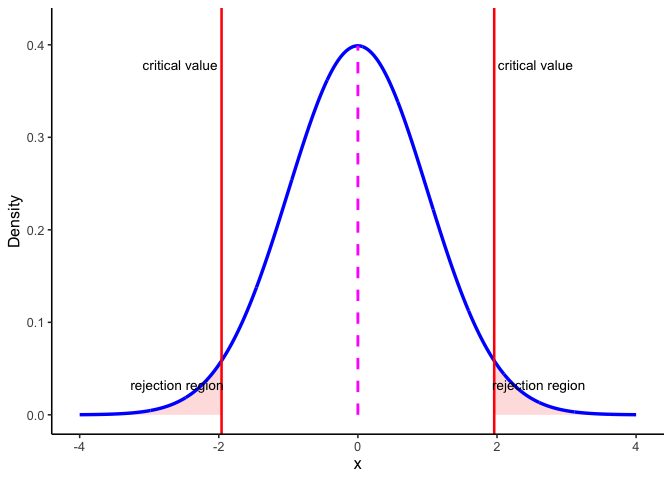
6 Hypothesis Testing
6.1 What you’ll learn
Hypothesis testing is the backbone of statistical inference: it lets us decide whether the patterns we see in a sample are strong enough to draw conclusions about the population. By the end of this chapter, you should be able to:
- Define the key players in hypothesis testing (null, alternative, true/estimated, and population/sampling distributions).
- Explain and use decision rules: decide whether to reject \(H_0\).
- Connect confidence intervals and hypothesis tests for common models.
- Identify and interpret errors (Type I and Type II) that can arise in testing.
- Recognize the role of effect size and power in planning a study, even if your main focus is running tests.
- Write a clear results statement that communicates both the statistical and substantive meaning of your test.
6.2 Core Players (distributions)
To make sense of hypothesis testing, it helps to picture four kinds of distributions. Later in the chapter we’ll put them together, but first we define them one at a time:
Null Distribution - The hypothesized population distribution under the assumption that the null hypothesis \(H_0\) is true.
Estimated Population Distribution - The distribution we infer from our sample. This represents what the data suggest about \(H_a\). (Sometimes called the inferred parent distribution.)
True Population Distribution - The actual distribution from which our sample was drawn. We never know this perfectly, but it’s the reality we’re trying to approximate.
Sampling Distribution of the Sample Mean - The distribution we’d get if we took many samples and calculated \(\bar{X}\) each time. This is key for connecting sample evidence back to the population.
Null value notation. We’ll write the hypothesized population mean as \(\mu_0\). Hypotheses compare the population mean \(\mu\) to this constant \(\mu_0\). The sample mean \(\bar{X}\) is never part of \(H_0\) or \(H_a\)—it’s the evidence we bring to test them.
Note on terms. In this chapter, you’ll sometimes see the phrase parent distribution in the prose. This is just a metaphor: a sample is like a “child” drawn from a “parent” distribution. The standard statistical term is population distribution. Both terms mean the same thing here. For clarity, we’ll use population distribution in figures and definitions, and you can think of parent as a memory aid.
6.3 Terms for Decision Rules
When running a hypothesis test, three terms guide our decision:
Significance level (\(\alpha\)). Chosen before the test. \(\alpha\) is the long-run probability of a Type I error (rejecting a true \(H_0\)). A common choice is \(\alpha = 0.05\). Smaller \(\alpha\) makes tests more cautious and produces wider confidence intervals.
\(p\)-value. Assuming \(H_0\) is true, the \(p\)-value is the probability of seeing a test statistic at least as extreme as what we observed. Small \(p\) means our data look unusual under \(H_0\).
Confidence level. Confidence level is the long-run proportion of confidence intervals that contain the true parameter when we repeat the entire data collection and interval procedure.
\[ \text{Confidence Level} = 1 - \alpha \]
With \(\alpha=0.05\), about 95% of intervals constructed this way will capture the true value.
It’s tempting to misinterpret confidence intervals. Do not say:
“There is a 95% probability this interval contains \(\mu\).”
Instead say:
“We used a procedure that captures \(\mu\) about 95% of the time in the long run.”
6.4 Three equivalent ways to test \(H_0\)
Test statistic / critical values. Choose \(\alpha\), find the corresponding critical value(s) for your test statistic, and compute your observed statistic. Reject \(H_0\) if the statistic falls in the rejection region.
Confidence interval (two-sided). Build a \((1-\alpha)\) CI for the parameter. Reject \(H_0\) if \(\mu_0\) lies outside the CI; fail to reject if it lies inside.
\(p\)-value (probability). Compute the \(p\)-value for your observed statistic under \(H_0\) and compare to \(\alpha\). Reject \(H_0\) if \(p<\alpha\).
Note. Methods 1–2 yield a yes/no at \(\alpha\); method 3 yields a yes/no plus a graded measure of evidence (exact \(p\)).
6.4.1 Test statistic/critical values
Figure 6.1 shows how these ideas come together in a two-sided test. The blue curve is the sampling distribution of the test statistic if the null hypothesis \(H_0\) is true. The dashed magenta line marks the expected center at \(\mu_0\). The red vertical lines are the critical values for \(\alpha = 0.05\). They cut off the most extreme 5% of the distribution: 2.5% in each tail. Those shaded tails are the rejection regions.
Here’s the decision rule:
- If the observed test statistic falls inside the central region, we fail to reject \(H_0\) because the result is consistent with chance variation.
- If it falls in either rejection region, we reject \(H_0\) because the result is too extreme to attribute to chance alone at the 5% level.
This picture makes clear why \(\alpha\) and the \(p\)-value are linked. \(\alpha\) sets the cutoff for how extreme is “too extreme,” while the \(p\)-value tells us how far into the tails our actual result lies.
6.4.2 Confidence intervals
Figure 6.2 shows another way to make the same decision. The blue curve is the null distribution (\(H_0\) true), and the dark green curve is the sampling distribution of the mean based on our sample. The dashed green curve is the estimated population distribution we infer from the sample.
The thick dark green bar at the bottom is the 95% confidence interval around the sample mean \(\bar{X}\). The magenta dashed line marks \(\mu_0\), the hypothesized mean under \(H_0\).
Decision rule:
- If \(\mu_0\) lies inside the CI bar, we fail to reject \(H_0\).
- If \(\mu_0\) lies outside the CI bar, we reject \(H_0\) at \(\alpha=0.05\).
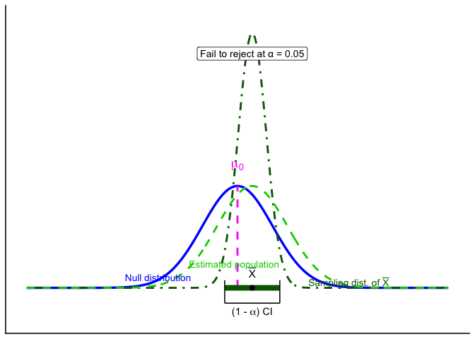
For common models, a two-sided level-\(\alpha\) test of \(H_0:\ \mu=\mu_0\) is equivalent to checking whether \(\mu_0\) lies inside the \(100(1-\alpha)%\) confidence interval. The CI is often the most intuitive way to see this: it shows both the decision (reject or not) and the range of parameter values still consistent with the data.
6.4.3 p-values
The \(p\)-value is the probability, under \(H_0\), of obtaining a test statistic at least as extreme as the one you observed. In practice, you compute it from your observed statistic using software or a table. Reject if \(p<\alpha\).
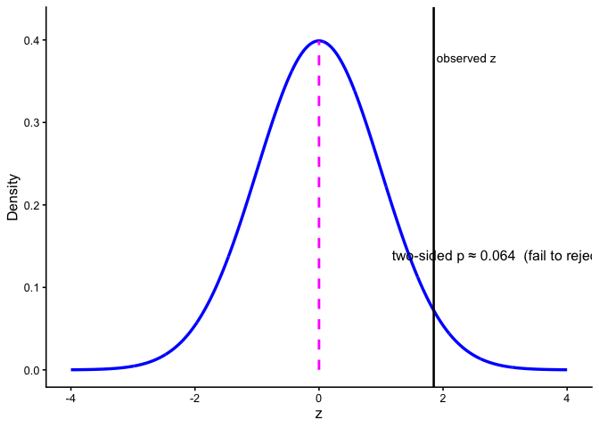
6.5 One- and Two-Tailed Tests
Two-tailed tests allow for differences in either direction:
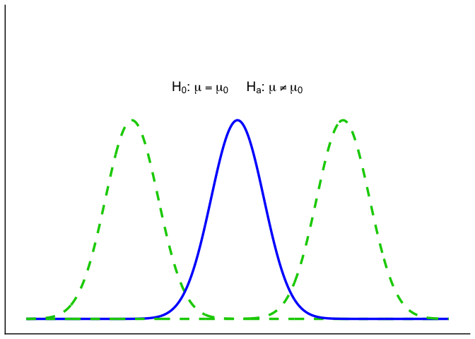
One-tailed tests only look in one direction (smaller or larger than \(\mu_0\)):
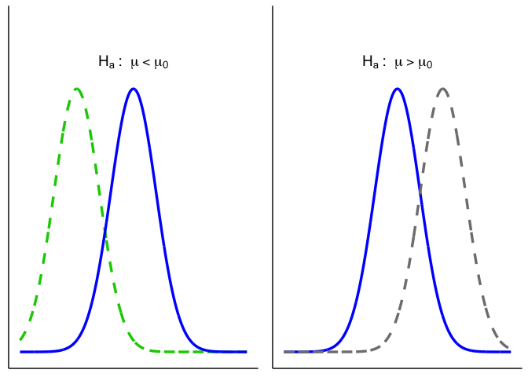
6.5.1 One- vs. Two-Sided: which and why?
Use this rule of thumb:
- Two-sided (default): You care whether \(\mu\) differs from \(\mu_0\) in either direction.
- One-sided (only if justified): Differences in the opposite direction are scientifically irrelevant and would not change your decision or action.
6.6 Putting it all together
Let’s bring the key players together. The figure below shows the elements we’ll use throughout the chapter:
- Blue solid line = Null distribution (\(H_0\)).
- Orange solid line = True population distribution (what actually generated the data).
- Light green dashed line = Estimated population distribution (inferred from the sample; our stand-in for \(H_a\)).
- Dark green dot-dashed line = Sampling distribution of the sample mean, \(\bar{X}\).
- Magenta dashed line = Hypothesized mean \(\mu_0\) (under \(H_0\)).
- Thick dark green bar = 95% confidence interval (CI) around the sample mean \(\bar{X}\).
Here they are layered together: this figure serves as your legend for the rest of the section.
Up to now we’ve introduced each distribution separately. Let’s layer them to see how they connect.
1. Null vs. true population.
In an idealized world where \(H_0\) is exactly true, the true population (orange) and the null distribution (blue) are identical. In reality, we never know the orange curve. It’s shown here for illustration.
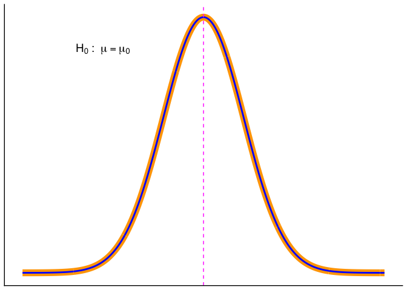
2. Adding the sampling distribution. We never know the true parent distribution directly. What we do have is a sample, and from that we can construct the sampling distribution of the mean (dark-green dot-dash). This distribution underlies our ability to estimate a CI (dark green horizontal line).

3. Adding the estimated population distribution.
From our sample we also infer an estimated population distribution (light-green dashed). In the best case, this lines up closely with the true population (orange). The CI bar shows that the sample mean is consistent with \(\mu_0\).
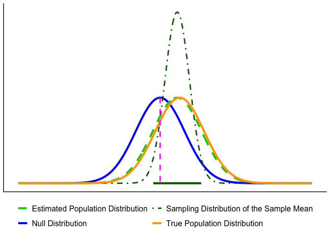
Putting everything together, you’ll see graphs moving forward that are all variations on the figure below. By now you should recognize each element.
Key reminder: \(\mu_0\) (pink dashed line) comes from the null hypothesis. The unknown \(\mu\) is what we’re trying to learn about, and we approximate it from the sample through the estimated population distribution and the sampling distribution of \(\bar{X}\).
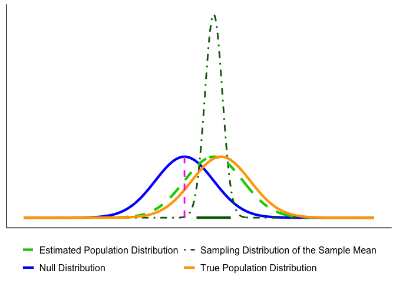
6.6.1 Decision Outcomes
Test outcomes are binary: we either reject \(H_0\) or fail to reject \(H_0\). We never accept \(H_0\), because sampling variability means we can’t prove it’s true, only that the data are consistent with it. Similarly, we don’t formally accept \(H_a\), but we can say the results provide support for \(H_a\) when \(H_0\) is rejected.
If the observed statistic falls in either tail beyond the critical value(s), reject \(H_0\). Otherwise, fail to reject \(H_0\). Report the exact \(p\) and an effect size or CI..
Here are our options (for a two tailed test).
- Reject the Null Hypothesis (Two-Tailed Test). The sample mean falls beyond the critical values, in the rejection region. The confidence interval also excludes the null mean (magenta line). In this example, the mean is more than 3 standard errors from \(\mu_0\), which is typically considered significant for common choices of \(\alpha\).
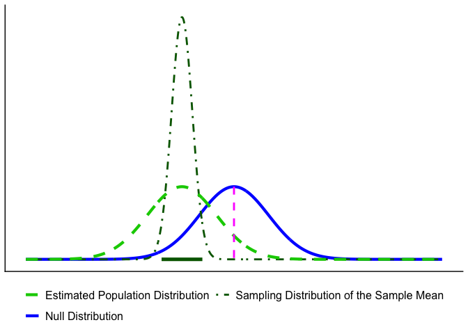
- Fail to Reject the Null Hypothesis (Two-Tailed Test). The sample mean falls in the non-rejection region, and the confidence interval includes the null mean. In this case, the evidence is consistent with chance variation, so we fail to reject \(H_0\).
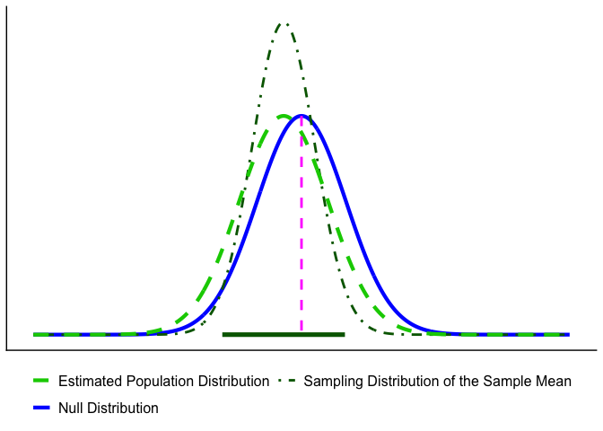
6.7 Errors in Hypothesis Testing
Sometimes, even when we apply the test correctly, sampling variability can lead us to the wrong conclusion.
Type I Error (\(\alpha\)): Rejecting \(H_0\) when it is actually true. This is like a smoke alarm going off when there’s no fire: a false alarm. By convention, \(\alpha\) is often set at 0.05 (5%).
Type II Error (\(\beta\)): Failing to reject \(H_0\) when it is actually false. This is like a smoke alarm staying silent when there is a fire: a missed signal.
| Decision | If the null hypothesis is True | If the null hypothesis is False |
|---|---|---|
| Reject \(H_0\) | Type I error (prob = \(\alpha\)) | Correct (prob = 1 - \(\beta\)) |
| Fail to reject \(H_0\) | Correct (prob = 1 - \(\alpha\)) | Type II error (prob = \(\beta\)) |
Key Takeaway: As \(\alpha\) gets smaller, \(\beta\) gets bigger, and vice-versa.
Errors happen because samples are imperfect.
- In Figure 6.12, the true population (orange) is almost identical to the null (blue). By chance, however, the sample mean lands far away, and the CI excludes \(\mu_0\). The test rejects \(H_0\) even though it is true—a Type I error.

- In Figure 6.13, the true population mean (orange) is far from \(\mu_0\), but the particular sample looks close to the null. The CI includes \(\mu_0\), so the test fails to reject when it should reject the null: a Type II error.

6.7.1 Effect of Sample Size on Errors
With fixed \(\alpha\) and correct assumptions, the long-run Type I error rate is \(\alpha\) for any \(n\). Sample size mainly affects Type II error: with small \(n\), the sampling distribution is wide, true effects are harder to detect, and \(\beta\) increases (power decreases). As \(n\) grows, the sampling distribution tightens, \(\beta\) falls, and power rises. Apparent changes in the Type I rate at small \(n\) usually reflect assumption violations (e.g., non-normality, poor variance estimates, multiple looks), not \(n\) itself.
Takeaway: Increasing \(n\) improves estimation precision and power (reduces \(\beta\)); Type I error remains at \(\alpha\) when assumptions hold.
6.7.2 How to interpret \(p\)-values
A \(p\)-value is the probability, assuming \(H_0\) is true, of obtaining a test statistic at least as extreme as the one we observed. We reject at level \(\alpha\) when \(p<\alpha\).
Tails. Match the tail(s) to \(H_a\):
- Two-sided (\(H_a:\ \mu \neq \mu_0\)): \(p = 2\cdot P(\text{tail beyond }|z_{\text{obs}}|)\)
- One-sided (\(H_a:\ \mu > \mu_0\)): \(p = P(Z \ge z_{\text{obs}})\)
- One-sided (\(H_a:\ \mu < \mu_0\)): \(p = P(Z \le z_{\text{obs}})\)
Common mistakes to avoid.
- \(p\) is not the probability that \(H_0\) is true.
- A smaller \(p\) does not imply a larger effect; report effect size and a CI.
- With very large \(n\), tiny effects can yield tiny \(p\); assess practical importance.
- With small \(n\), true effects can yield large \(p\) (low power).
Takeaway. Use \(p\) for the decision, but interpret results alongside effect size and a 95% CI.
6.7.3 Reporting results
A results statement gives the plain-language conclusion and the key statistics in a fixed order. Aim for one clean sentence plus context.
Template (two-sided test): Plain-language finding. (test, statistic, df or n, value of statistic, p-value, effect size/CI if relevant).
What to include (in order):
- Test name (e.g., one-sample z, two-sample t, χ², regression).
- Test statistic and its degrees of freedom (or sample size for z).
- Exact \(p\) (report \(p<0.001\) when very small).
- An effect size and/or a 95% CI when available.
Examples
One-sample z: The average mercury level within 10 km of the smelter was higher than the legal limit (z = 2.85, n = 32, p = 0.004).
One-sample t with CI: Mean nitrate exceeded the target by 0.41 mg/L (t(31) = 2.6, p = 0.013, 95% CI [0.09, 0.73] mg/L).
Two-sample t with effect size: Downstream sites had higher turbidity than upstream sites (t(58) = 3.1, p = 0.003, Cohen’s (d = 0.80)).
Not significant (be explicit): Mean canopy temperature did not differ from the baseline (t(47) = 1.2, p = 0.24); we fail to reject \(H_0\).
Rounding & style
- Round statistics to 2 decimals; \(p\) to 3 decimals (use \(p<0.001\) when needed).
- Use “fail to reject \(H_0\)” (not “accept”).
- Match tail to hypothesis in prose (e.g., “higher than,” “lower than,” or “different from”).
Do / Don’t
- Do pair the sentence with a short, substantive takeaway (what it means for the question).
- Do include a CI or effect size when it aids interpretation.
- Don’t restate methods; don’t claim proof; don’t omit units.
Takeaway: One sentence is enough: state the direction in words, then report (test, statistic, df/n, (p), and effect size/CI).
6.7.4 Beyond the 0.05 cutoff: Effect-size and power
Why go beyond a yes/no at \(\alpha=0.05\)? Because scientists, managers, policymakers, and communities need to know how large an effect is and how likely a study is to detect it. That’s what effect size and power provide.
Working definitions
Effect size: how big the difference or association is (in natural units or standardized units like Cohen’s \(d\)).
Power (\(1-\beta\)): the probability your design will detect a real effect of a specified size at your chosen \(\alpha\).
Use them before you sample. Decide what effect is meaningful for your context (e.g., a 0.3 mg/L nitrate reduction) and size your study to have adequate power to detect that effect.
6.7.5 Effect size: practical vs. standardized
What is effect size? It’s how big the difference or association is. You can express it in original units (practical meaning) or in standardized units (comparability across scales).
Practical (original units). Use the scale stakeholders recognize.
- Exams: “Treatment improved scores by 5 percentage points” (a letter-grade–sized change).
- Time-on-task: “New training reduces practice time by 1,000 hours out of 10,000” (a 10% reduction).
These statements are easy to interpret, but they don’t travel well across contexts or measures.
Standardized (unitless). When units are unfamiliar or scales differ, standardize by typical variability. The most common standardized effect size metric is Cohen’s d. For two means with a common SD \(\sigma\),
\[ d = \frac{\mu_1 - \mu_2}{\sigma} \]
Now “how big?” is expressed in SD units. If you notice, this is just a kind of z-score. It is a way to standardize the mean difference in terms of the population standard deviation.
Environmental example (biodiversity index). Suppose an index increases from 3 to 4 after reforestation.
In raw units: +1 index point.
In standardized terms:
- If the SD across sites is 1.0, then \(d = 1.0\): a large shift.
- If the SD is 10, then \(d = 0.10\): a small shift.
Takeaway: Report both when possible—original units for meaning (policy/action) and a standardized effect (e.g., \(Cohen’s d\)) for comparison across studies.
Notes for practice
- In real data, \(\sigma\) is unknown; estimate it (pooled SD for two groups, with small-sample corrections as needed).
- Heuristics (context matters): \(d \approx 0.2\) (small), \(d \approx 0.5\) (medium), \(d \approx 0.8\) (large).
- A “small” \(d\) can still be important (e.g., small reductions in lead or \(\mathrm{PM}_{2.5}\) can matter for health).
- Pair effect sizes with 95% CIs to show precision, not just magnitude.
Let’s ground effect size in a concrete example. Suppose we’re measuring final exam performance (percent correct). The class mean is 65% with a standard deviation of 5%. Group A is a control, while Group B receives some instructional treatment.
Figure 6.14 shows four possible scenarios:
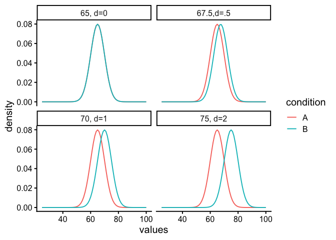
- Panel 1 (\(d=0\)): No effect. Both groups sample from the same distribution (mean = 65).
- Panel 2 (\(d=0.5\)): Group B’s mean shifts upward by 2.5 points (67.5).
- Panel 3 (\(d=1\)): A 5-point shift (70).
- Panel 4 (\(d=2\)): A large 10-point shift (75).
The takeaway is that effect size puts raw differences into a standard-deviation scale. A half–SD shift (\(d=0.5\)) is noticeable but modest; a two–SD shift (\(d=2\)) is very large. In practice, we rarely know beforehand how big a shift to expect, that’s why we conduct the study.
6.8 Power
When a real effect exists, your design needs to be sensitive enough to detect it, otherwise the test has little value. We’ve already seen that effects can vary in size. Now we add a second idea: study designs differ in their ability to reliably detect those effects. This sensitivity is called statistical power.
Power rises when:
- Effect size is larger.
- Sample size (\(n\)) is larger (smaller \(SE\)).
- The test is less conservative (larger \(\alpha\)).
- Measurement noise is lower (smaller \(SD\)).
Question: “With \(\alpha = 0.05\), how large must \(n\) be to achieve \(\ge 80%\) power for the smallest effect that matters?”
6.8.1 Simulation walkthrough
Let’s see how design choices affect power with a simple simulation. Suppose we have two groups, each with \(n=10\). Group A (control) is sampled from a normal distribution with mean = 10 and \(SD = 5\). Group B (treatment) has a mean = 12.5, a shift of 2.5 points (Cohen’s \(d=0.5\)), considered a medium effect.
If we simulate this experiment 1,000 times and run an independent-samples \(t\)-test each time, how often do we reject \(H_0\) at \(\alpha=0.05\)?
set.seed(2025)
p <- numeric(1000)
for(i in 1:1000){
A <- rnorm(10, 10, 5)
B <- rnorm(10, 12.5, 5)
p[i] <- t.test(A,B,var.equal=TRUE)$p.value
}#> [1] 0.207This proportion is the power of the design: the probability of detecting the true effect in repeated experiments. With \(n=10\), it’s only about 20%. Even though we know a medium-sized effect exists, the test usually fails to pick it up with such a small sample.
6.8.2 How power changes
- Larger \(n\). Doubling to \(n=20\) per group reduces sampling error and roughly doubles power:
#> [1] 0.328- *Smaller \(\alpha\). Making the test more conservative (e.g., \(\alpha=0.01\)) lowers power, because fewer outcomes count as “significant”:
#> [1] 0.123- Bigger effects are easier to detect. If the treatment produces a big shift (say 2 standard deviations), the same design has near-perfect power:
p <- numeric(1000)
for(i in 1:1000){
A <- rnorm(20, 10, 5)
B <- rnorm(20, 20, 5) # 2SD effect
p[i] <- t.test(A,B,var.equal=TRUE)$p.value
}#> [1] 16.8.3 Power curves
It’s best to think of power as a profile, not a single number. A power curve shows how sensitive a design is across a range of possible effects.
In Figure 6.15, we fix the design to a two-sample \(t\)-test with \(n=10\) per group and \(\alpha=0.05\). Power is plotted on the y-axis, and the true effect size (Cohen’s \(d\)) is on the x-axis.
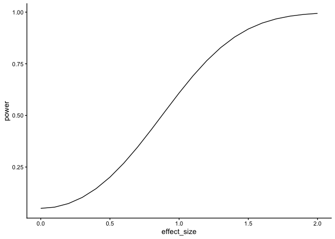
Walkthrough.
- With \(n=10\), the design only detects a medium effect (\(d=0.5\)) about 20% of the time.
- A larger effect (\(d=0.8\)) is caught about half the time.
- Very large effects (\(d=2\)) are detected almost every time.
This shows that small samples are only sensitive to big, obvious effects.
Now suppose prior research suggests the effect size is small (\(d=0.2\)). Instead of varying the effect, we can ask: how many subjects per group do we need to have decent power?
Figure 6.16 plots power against sample size for detecting \(d=0.2\). The green line marks 80% power, a common planning target.
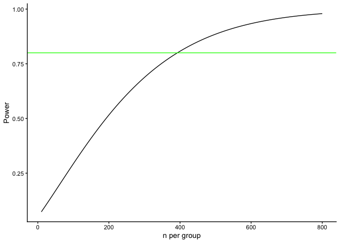
Walkthrough.
- At \(n=10\) per group, power to detect \(d=0.2\) is near zero.
- To reach 80% power, we need about 380 per group.
- Even then, 20% of studies would still fail to reject \(H_0\) just by chance.
Takeaway:
- A power curve shows, for a fixed design, how power rises as the true effect grows.
- A power-vs-\(n\) curve shows how many samples you need to hit a target power for a specific effect.
- Power analysis is mainly a planning tool, not a results-reporting tool. When you design a study, don’t just aim for “power = 0.8.” Always state the assumed effect size and the standard deviation you used for that calculation. Otherwise, “0.8” has no meaning—power depends entirely on those assumptions.
6.8.4 Planning your design
Our discussion of effect size and power highlight the importance of the understanding the statistical limitations of an experimental design. In particular, we have seen the relationship between:
- Define a meaningful effect (environmentally or policy-relevant minimum).
- Choose \(\alpha\) (often 0.05; justify if different).
- Estimate variability (pilot data, literature, or historical monitoring).
- Compute \(n\) for \(\ge 80%\) power (or explain tradeoffs if you can’t reach it).
- Pre-specify one- vs two-tailed before data collection.
As a general rule of thumb, small-\(n\) designs can only reliably detect very large effects, whereas large-\(n\) designs can reliably detect much smaller effects. As a researcher, it is your responsibility to plan your design accordingly so that it is capable of reliably detecting the kinds of effects it is intended to measure.
6.8.5 Two cautions (common pitfalls)
Low power inflates doubt, even when (p<0.05). Underpowered studies rarely replicate. A design with only 30% power to detect an expected effect might, by luck, produce a “significant” result—but most replications will not. Worse, false positives from small samples tend to look exaggerated: if a spurious finding reaches significance, the estimated effect size is often large enough to seem convincing.
Huge \(n\) finds tiny effects. With very large samples, trivial differences can register as statistically significant. For example, a billion-person trial might show a drug reduces pain by 0.01%. That effect is “real” but practically meaningless. This is why effect size and confidence intervals should be reported alongside \(p\)-values: significance alone is not enough.
Figure 6.17 shows the first pitfall graphically. Even when the null hypothesis is true, 5% of tests are expected to fall below \(\alpha = 0.05\). In small samples, those false positives tend to be paired with large apparent effect sizes. This can give the illusion of a strong, replicable finding when in reality it is just sampling noise.
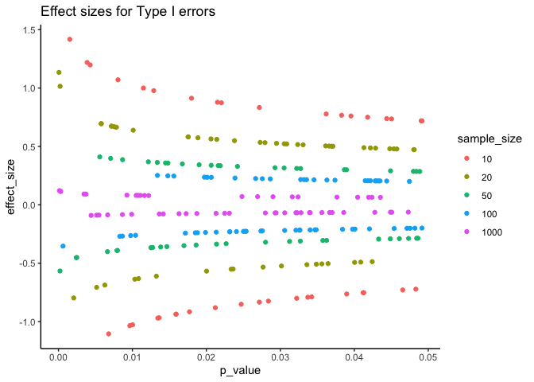
Takeaway: statistical significance does not guarantee scientific significance. Always interpret \(p\) in the context of effect size, confidence intervals, and study design.
Key point
Power is not a fixed property of a test—it depends entirely on assumptions about \(n\), effect size, \(\alpha\), and variability. Think of it as a family of numbers, not a single value. That’s why power analysis is most useful before you collect data: it tells you whether your design is capable of detecting the kind of effect you care about